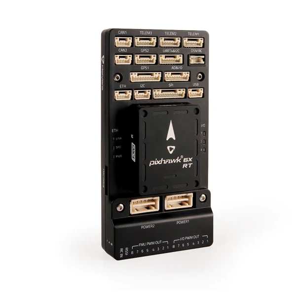

Holybro Pixhawk 6X-RT


Holybro Pixhawk 6X-RT
The Pixhawk 6X-RT is a flight controller from Holybro built to the Pixhawk FMUv6X-RT open standard, using the i.MX RT1176 crossover MCU. This board port targets that standard, so it also covers the NXP MR-VMU-RT1176.
Features
MIMXRT1176DVMAA, Cortex-M7 and Cortex-M4. This port clocks the M7 at 996 MHz
64 MB external QSPI flash, 2 MB RAM
CAAM cryptographic accelerator with a hardware entropy source
STM32F100 IO co-processor
USB-C device connector
2 CAN buses, 100BASE-TX Ethernet, 16 PWM outputs
Three IMUs on a vibration isolation system, two BMP388 barometers, BMM150 magnetometer
microSD socket
Supported in NuttX: the CAAM entropy source through /dev/random and
/dev/urandom, LPUART, USB device and the FlexSPI boot path.
Warning
The sensors, CAN, Ethernet and PWM outputs listed above are board features with no NuttX drivers in this port. Only the peripherals named as supported are wired up.
Serial Console
LPUART1 is on the DEBUG connector at 57600 baud.
Pin |
Signal |
Notes |
|---|---|---|
DEBUG TX |
GPIO_DISP_B1_02 |
LPUART1_TX, ALT9 |
DEBUG RX |
GPIO_DISP_B1_03 |
LPUART1_RX, ALT9 |
The nsh configuration uses the USB CDC/ACM console instead, so the DEBUG
connector is optional and a USB-C cable is enough.
Flash Layout
The board ships with the PX4 bootloader programmed at the base of QSPI flash.
It occupies the first 128 KB and starts the application at 0x30020000.
NuttX links to that address and is loaded by the bootloader rather than written
to the flash base.
Address |
Size |
Contents |
|---|---|---|
0x30000000 |
128 KB |
PX4 bootloader, as shipped |
0x30020000 |
4 MB - 128 KB |
NuttX |
Warning
Writing to the flash base removes the bootloader, and with it the ability to load firmware over USB. Recovering from that needs SWD.
Power Supply
The board is powered over USB-C for bench use, or from the vehicle power module in flight. Nothing in this port manages power.
Installation
The toolchain is the same as for every i.MX RT board; see the platform page.
Flashing uses the uploader from the PX4 source tree, Tools/px4_uploader.py.
PX4 releases before 1.18 ship it as px_uploader.py, without the 4, with
the same arguments. The bootloader enumerates as a USB CDC/ACM device for
roughly five seconds after reset, so start the uploader first and then reset
the board:
$ python Tools/px_mkfw.py --prototype firmware.prototype --image nuttx.bin > nuttx.px4
$ python Tools/px4_uploader.py --port "/dev/serial/by-id/*PX4*" nuttx.px4
The uploader expects a .px4 container rather than a raw binary.
Configurations
nsh
The basic NuttShell configuration. The console is USB CDC/ACM, so the shell
appears on the same connector used for flashing, at /dev/ttyACM0 on the
host. /dev/random and /dev/urandom are backed by the CAAM hardware
entropy source.
rptun
nsh plus the SD card and the RPTUN backend for the CM4
(CONFIG_IMXRT_RPTUN). The board bring-up registers /dev/rptun/cm4 and
holds the core; rptun start loads the ELF named by
CONFIG_FMU_V6XRT_CM4_FIRMWARE (/mnt/sd/cm4.elf) into the CM4 code TCM
and releases it. The image must carry a .resource_table section and link
to 0x1ffe0000 with its shared memory in the upper 64 KB of that TCM; see
the RPTUN section of the platform page.
nsh> mount -t vfat /dev/mmcsd0 /mnt/sd
nsh> rptun start /dev/rptun/cm4
nsh> sleep 2
nsh> rpmsg ping /dev/rpmsg/cm4 100 64 3 0
nsh> rpmsg dump all
nsh> rptun stop /dev/rptun/cm4
Start is asynchronous; the rpmsg node /dev/rpmsg/cm4 appears once the CM4
has announced its endpoints. rpmsg ping and rpmsg dump report through
syslog, which this configuration keeps in a RAM log: read it with dmesg.
After rptun stop the CM4 is parked in a wfi loop at its boot address;
the next start reloads the image.
To run without an SD card, enable CONFIG_FMU_V6XRT_CM4_ROMFS and copy the CM4 image to
boards/arm/imxrt/fmu-v6xrt/src/etc/cm4.elf before building. It is baked into the etc ROMFS
that NuttX mounts at boot and the firmware path becomes /etc/cm4.elf, so the mount step
goes away. The file is ignored by git.